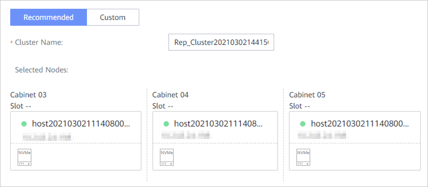
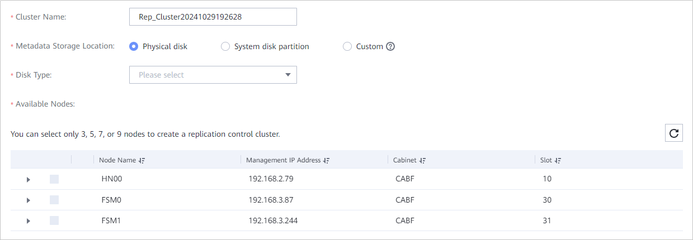
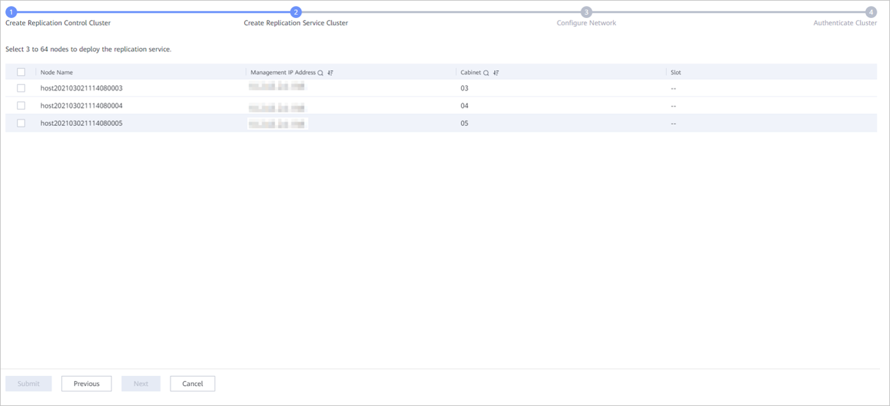
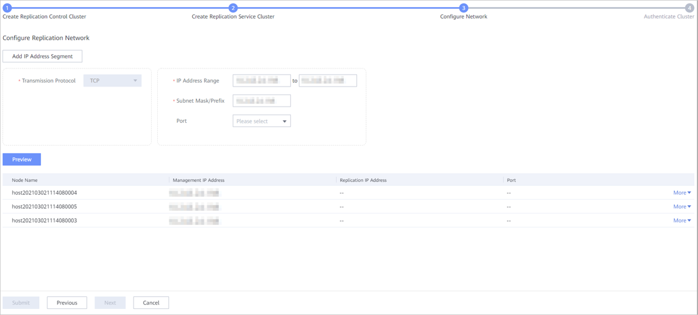
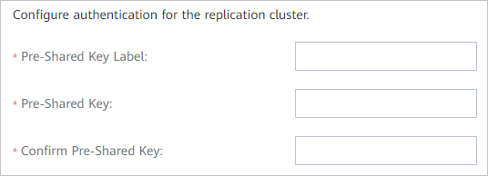

A replication cluster consists of replication nodes. Creating a replication cluster includes creating a replication control cluster and a replication service cluster, configuring the replication network, and authenticating the clusters. You need to create replication clusters on DeviceManager of the local and remote storage systems.
Context
A replication cluster consists of a replication control cluster and a replication service cluster.
- The replication control cluster manages cluster nodes and metadata and contains 3, 5, 7, and 9 nodes. Detailed rules are as follows:
- If the cluster contains 3 or 4 nodes, configure 3 nodes.
- If the cluster contains 5 or 6 nodes, configure 5 nodes.
- If the cluster contains 7 to 32 nodes, configure 7 nodes.
- If the cluster contains 33 nodes or more, configure 9 nodes.
- A replication control cluster can be configured with a maximum of nine nodes, and a maximum of four faulty nodes are tolerated in the cluster, improving the cluster reliability.
- The replication service cluster manages remote replication pairs and contain 3 to 64 nodes.
Precautions
Ensure that the DeviceManager version of the remote storage system is not earlier than that of the local storage system. Otherwise, the replication will fail.
Procedure
- Log in to DeviceManager of the local and remote storage systems in sequence.
- Choose .
- Click Create.
The Create Replication Cluster wizard page is displayed.
- Create a replication control cluster.
A replication control cluster can be created in Recommended or Custom mode.
Recommended is supported when there are at least 3 nodes available and the metadata storage locations of all nodes are physical disks or system disk partitions. In other scenarios, only Custom is supported.
- Recommended

- Set the cluster name.

- The name contains 1 to 31 characters.
- A replication control cluster name contains only letters, digits, underscores (_), and hyphens (-).
- In the Selected Nodes area, view node configurations.
- Click Submit.
- Wait until the configuration is successful, and then click Next.
- Set the cluster name.
- Custom

- Set the name of the replication control cluster.
- The name contains 1 to 31 characters.
- A replication control cluster name contains only letters, digits, underscores (_), and hyphens (-).
- In Metadata Storage Location, select the location to store the metadata.Table 1 describes the selection of replication service metadata disks.
Table 1 Replication service metadata disk selection Basic Service Metadata Disk (ZooKeeper Disk) Type
Replication Service Metadata Disk Selection
Independent SAS disk or SSD
Use the basic service ZooKeeper disk as the replication service metadata disk.
Independent SATA disk
Select an independent SAS disk or SSD as the replication service metadata disk, or select a system disk partition as the replication service metadata disk.
System disk (SSD) partition
Select a system disk partition as the replication service metadata disk.
System disk (non-SSD) partition
Select an independent SAS disk or SSD as the replication service metadata disk.
- The size of the metadata disk must be greater than 105 GB.
- If a system disk partition is used as the replication service metadata disk, the system disk must be:
- An SSD or SAS disk when the number of local storage pools is less than or equal to 4.
- An SSD when the number of local storage pools is greater than 4.
- If you select Physical disk, specify Disk Type and Disk Selection Mode.
Possible options are SAS, SATA, SSD card or NVMe SSD, SSD, and M.2 SSD. If SSD card or NVMe SSD or M.2 SSD is selected, you cannot select Specify Slot.
Disk Selection Mode can be:
- Specify Slot: Manually enter a slot number. A slot number ranges from 0 to 60.
- Manually Select: Manually select disks for each node.
- System disk partition: If you select System disk partition, the system stores metadata in the /opt/ccdb_disk2 partition of the system disks.
- Custom: You can select both physical disks and system disk partitions for use. This mode is used when you need to select different metadata storage locations for different nodes.
- Select the nodes to create the replication control cluster.
- If Metadata Storage Location is set to Physical disk, select the nodes and disks for creating the replication control cluster from Available Nodes.
- If Metadata Storage Location is set to System disk partition, select the nodes for creating the replication control cluster from Available Nodes.
- Click Submit.
- Wait until the configuration is successful, and then click Next.
- Set the name of the replication control cluster.
- Recommended
- Create a replication service cluster.

- Select the nodes to create the replication service cluster.
- Click Submit.
- Wait until the creation is successful, and then click Next.
- Configure the network.

- Configure network information for replication nodes. Table 2 describes related parameters.
Table 2 Replication node network parameters Parameter
Description
Transmission Protocol
Transmission protocol used by the replication network.
IP Address Range
IP address range of the replication network.
NOTE:- Replication IP addresses cannot be the IP addresses of other network planes.
- The replication network cannot use the same subnet as other networks.
Subnet Mask/Prefix
- When an IPv4 address is used, this parameter indicates the subnet mask of the replication IPv4 address and identifies the subnet to which the IP address belongs.
- When an IPv6 address is used, this parameter indicates the prefix of the replication IPv6 address.
Port
Port of the replication network.NOTE:- If you directly configure the replication network in this step, you must select ports.
- If a selected port has an IP address configured in its configuration file in advance and the IP address is in the specified IP address range, the system will allocate the IP address as a replication IP address.
- If a selected port has no IP address configured in its configuration file in advance, the system will allocate an available IP address from the specified IP address range as a replication IP address.
- Click Preview.
- Click Submit.
- Wait until the creation is successful, and then click Next.
- Configure network information for replication nodes. Table 2 describes related parameters.
- Authenticate the cluster.

Table 3 describes related parameters.Table 3 Cluster authentication parameters Parameter
Description
Pre-Shared Key Label
Identifies the pre-shared key of a cluster.
[Value range]
- A pre-shared key label contains 5 to 32 characters.
- A pre-shared key label can contain only letters, digits, and underscores (_), and must start with a letter.
Pre-Shared Key
Implements identity authentication. This parameter functions together with Pre-Shared Key Label.
[Value range]
- A pre-shared key contains 8 to 31 characters.
- A pre-shared must contain special characters (excluding <>' &") and any two types of the following characters: uppercase letters, lowercase letters, and digits.
Confirm Pre-Shared Key
Confirms the pre-shared key.
- Click Submit.